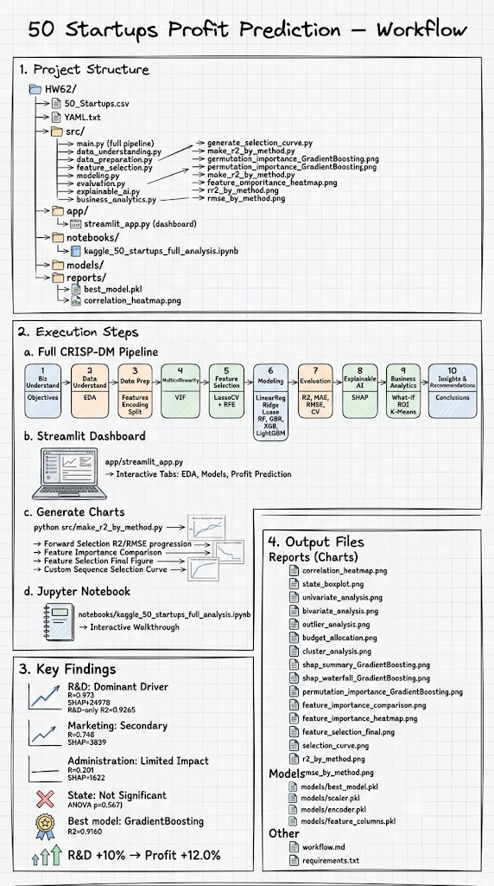
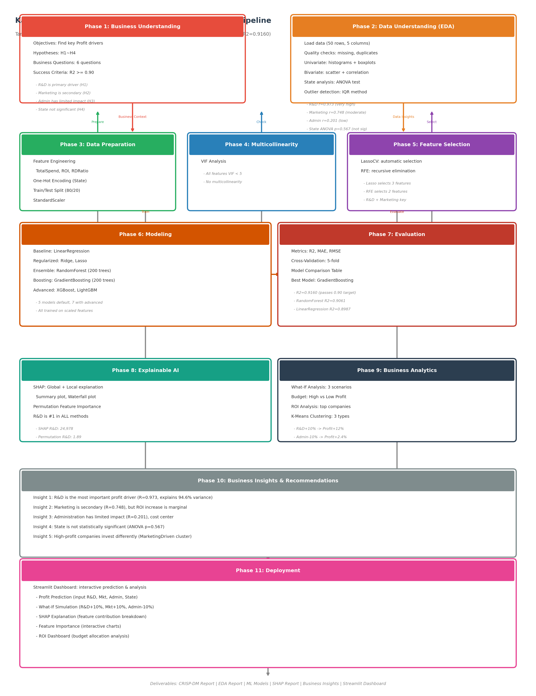
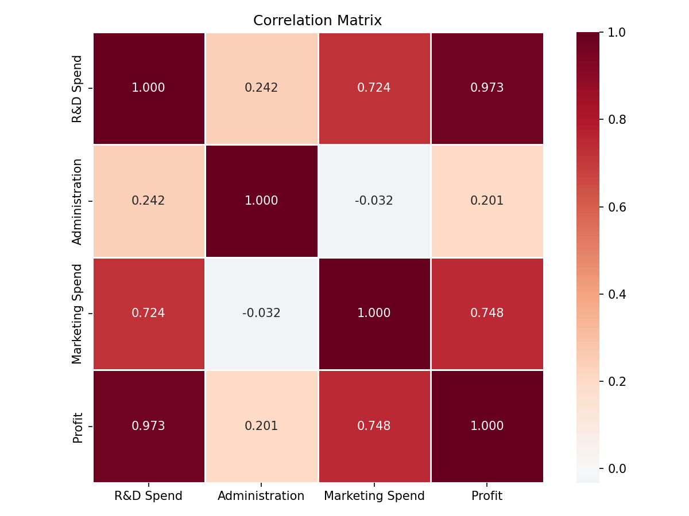
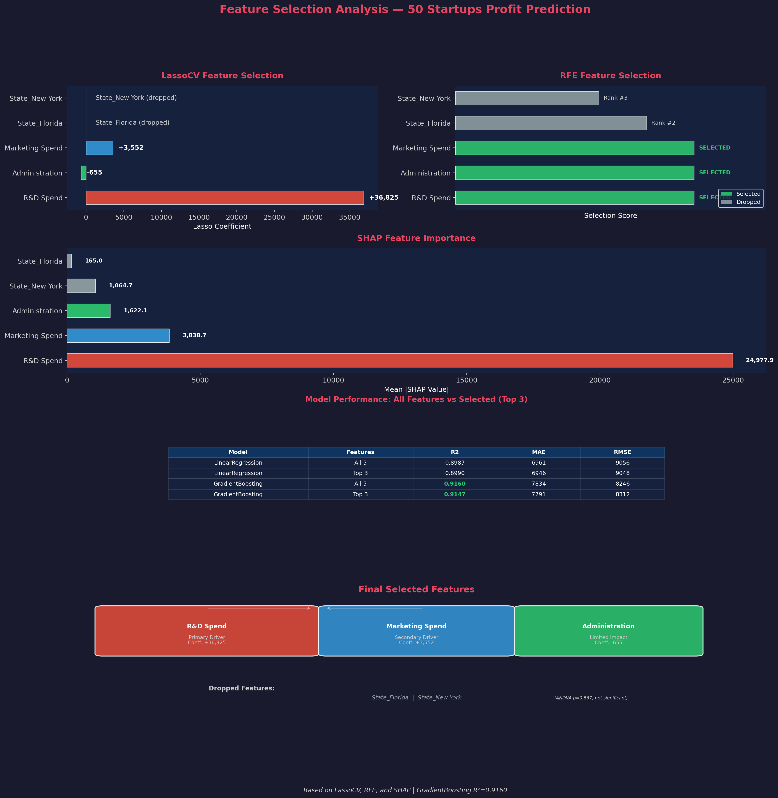
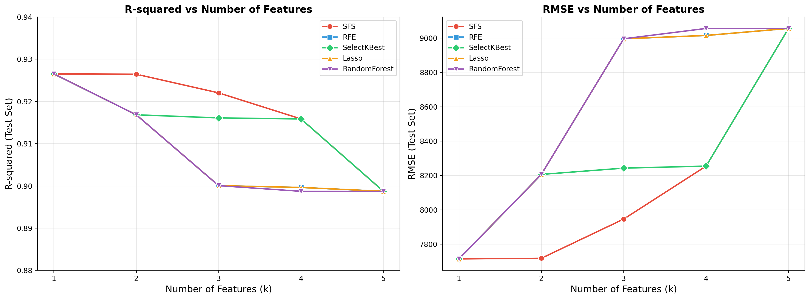
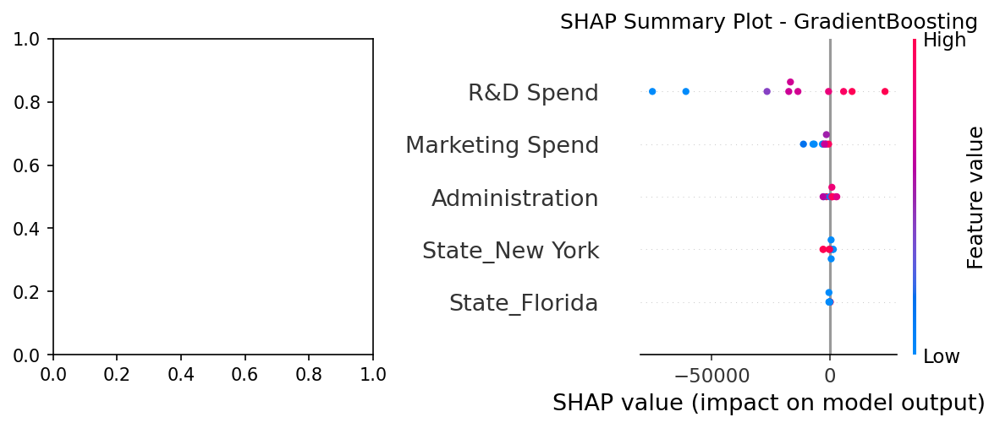
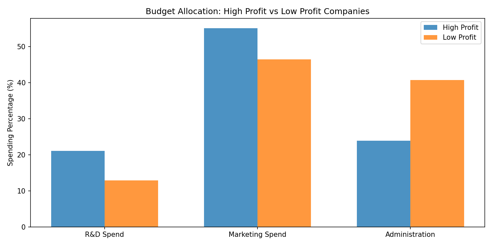

Kaggle 50 Startups — CRISP-DM ML Project
Predicting Startup Profit Using Scikit-Learn · Regression · CRISP-DM Framework
Project Explainer Video


Project Overview
| Item | Description |
|---|---|
| Dataset | Kaggle 50 Startups |
| Problem Type | Regression |
| Target Variable | Profit |
| Features | R&D Spend, Administration, Marketing Spend, State |
| Framework | CRISP-DM (Cross-Industry Standard Process for Data Mining) |
| Best Model | GradientBoosting Regressor |
| Best R² | 0.9160 (target ≥ 0.90) |
Business Questions
- Which factors most influence Profit?
- Is R&D more important than Marketing?
- Does Administration have real impact on Profit?
- Does State affect Profit?
- How to optimize resource allocation?
Hypotheses
| Hypothesis | Description | Result |
|---|---|---|
| H1 | R&D Spend is highly correlated with Profit | Confirmed (r = 0.973) |
| H2 | Marketing Spend is moderately correlated with Profit | Confirmed (r = 0.748) |
| H3 | Administration has limited impact on Profit | Confirmed (r = 0.201) |
| H4 | State has no significant effect on Profit | Confirmed (ANOVA p = 0.567) |
CRISP-DM Pipeline
Phase 1: Business Understanding
Define objectives, hypotheses, and success criteria. Target: R² ≥ 0.90.
Phase 2: Data Understanding (EDA)
- 50 rows, 5 columns, no missing values, no duplicates
- Correlation: R&D (0.973) > Marketing (0.748) > Administration (0.201)
- ANOVA: State not significant (p = 0.567)

Phase 3: Data Preparation
- Feature Engineering: TotalSpend, ROI, RDRatio, MarketingRatio
- One-Hot Encoding: State → California, Florida, New York
- Train/Test Split: 80/20 (random_state=42)
- Scaling: StandardScaler (for Ridge, Lasso)
Phase 4: Multicollinearity (VIF)
All VIF values < 5 → no multicollinearity issues.
Phase 5: Feature Selection
| Method | Selected Features |
|---|---|
| LassoCV | R&D Spend, Marketing Spend, Administration |
| RFE | R&D Spend, Marketing Spend |


Phase 6: Modeling
| Model | R² | MAE | RMSE | CV R² (5-fold) |
|---|---|---|---|---|
| GradientBoosting | 0.9160 | 7,834 | 8,246 | 0.931 ± 0.030 |
| RandomForest | 0.9061 | 6,214 | 8,719 | 0.941 ± 0.052 |
| LinearRegression | 0.8987 | 6,961 | 9,056 | 0.929 ± 0.044 |
| Ridge | 0.8954 | 7,408 | 9,203 | 0.929 ± 0.038 |
| Lasso | 0.8988 | 6,961 | 9,055 | 0.929 ± 0.044 |
| XGBoost | 0.8828 | 7,507 | 9,742 | 0.914 ± 0.034 |
Phase 7: Evaluation
5-fold Cross-Validation for robust assessment. All models stable with CV R² ~0.93.
Phase 8: Explainable AI (SHAP)

| Rank | Feature | SHAP Value | Permutation Importance |
|---|---|---|---|
| 1 | R&D Spend | 24,978 | 1.89 |
| 2 | Marketing Spend | 3,839 | 0.04 |
| 3 | Administration | 1,622 | 0.02 |
| 4 | State_New York | 1,065 | 0.008 |
| 5 | State_Florida | 165 | 0.0002 |
Phase 9: Business Analytics
What-If Analysis
| Scenario | Profit Change | % Change |
|---|---|---|
| R&D +10% | +$15,225 | +12.0% |
| Marketing +10% | -$20 | -0.02% |
| Administration -10% | +$3,056 | +2.4% |
Budget Analysis

- High-profit companies invest 55% in Marketing, 21% in R&D
- Low-profit companies spend 41% on Administration (inefficient)
Clustering (K-Means)
| Cluster | R&D | Marketing | Admin | Profit |
|---|---|---|---|---|
| MarketingDriven | 105,606 | 319,369 | 124,205 | $139,199 |
| InnovationDriven | 55,586 | 168,788 | 114,644 | $99,331 |
| Balanced | 31,219 | 33,638 | 126,157 | $71,043 |
Phase 10: Insights & Recommendations
- Prioritize R&D Investment — strongest profit driver (r=0.973)
- Optimize Marketing Efficiency — high spend doesn't guarantee ROI
- Control Admin Costs — cost center, not value driver
- Build Profit Prediction System — use GradientBoosting model
- Implement Budget Allocation Dashboard — Streamlit app
Phase 11: Deployment

Feature Selection Comparison
Key Insight: R&D alone achieves R²=0.9265 (exceeding the 0.90 target). Adding more features slightly reduces performance due to noise and multicollinearity.
How to Run
Installation
pip install -r requirements.txt
Full Pipeline
python -c "from src.main import main; main()"
Streamlit Dashboard
streamlit run app/streamlit_app.py
Project Structure
HW62/
└ 50_Startups.csv # Raw data
└ YAML.txt # Project specification
└ src/ # Python modules
└ main.py # Pipeline orchestrator
└ feature_selection.py # LassoCV + RFE
└ modeling.py # Model training
└ evaluation.py # Metrics & CV
└ explainable_ai.py # SHAP
└ business_analytics.py # What-if, budget, ROI
└ app/streamlit_app.py # Streamlit dashboard
└ reports/ # Generated charts
└ notebooks/ # Jupyter notebook
└ requirements.txt
└ .gitignore
└ 50_Startups.csv # Raw data
└ YAML.txt # Project specification
└ src/ # Python modules
└ main.py # Pipeline orchestrator
└ feature_selection.py # LassoCV + RFE
└ modeling.py # Model training
└ evaluation.py # Metrics & CV
└ explainable_ai.py # SHAP
└ business_analytics.py # What-if, budget, ROI
└ app/streamlit_app.py # Streamlit dashboard
└ reports/ # Generated charts
└ notebooks/ # Jupyter notebook
└ requirements.txt
└ .gitignore
Deliverables
| Deliverable | Description |
|---|---|
| CRISP-DM Report | Full project documentation |
| EDA Report | Data exploration & visualization |
| Statistical Analysis | Correlation, ANOVA, VIF |
| Feature Selection | LassoCV, RFE results |
| Machine Learning Models | 7 trained models |
| SHAP Explainability | Global & local explanations |
| Business Insights | What-if, budget, ROI analysis |
| Streamlit Dashboard | Interactive deployment |
| GitHub Repository | Version-controlled project |
| Presentation Slides | Portfolio showcase |
Tech Stack
Python 3.10+ pandas NumPy scikit-learn matplotlib seaborn SHAP XGBoost LightGBM Streamlit